Highlite Design System
「価値の原石を作る」— Highliteは"結晶化ブランディング"を核に置くブランドスタジオです。
このデザインシステムは、Highliteのウェブサイト（highlite.co.jp）から抽出した
デザイントークン・コンポーネント・パターンを体系化したものです。
ダイヤモンド形のシェイプモチーフ、クリスタルカラー、広めのレタースペーシングが
このブランドの視覚言語の根幹をなしています。
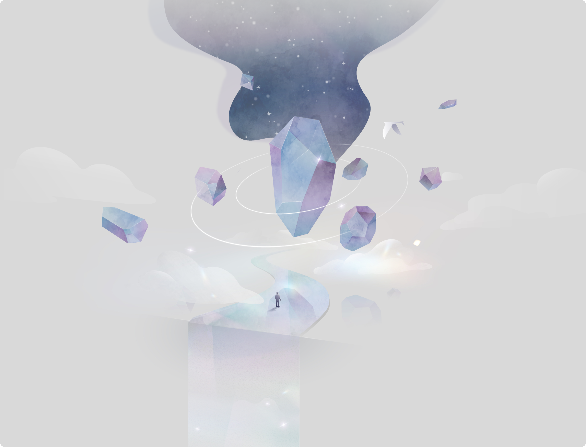
価値の原石を作る。
Highliteは、価値を定義し、表現することで、
事業に余白を作り、世界をより創造的にしていく
ブランドスタジオです。
Hero Section — ヒーローセクション
Colors
Highliteのカラーパレットは、結晶の透明感と日本の静けさを組み合わせています。
Background Colors — 背景色
Text Colors — テキスト色
Crystal Palette — クリスタルカラー
Gradients — グラデーション
Typography
2つのフォントファミリーが役割分担しています。日本語テキストはNoto Sans JP、英語見出しはRobotoを使用。広めのレタースペーシングと軽い字重が特徴です。
Font Families — フォントファミリー
| Role | Family | Token | Usage |
|---|---|---|---|
| Latin / Display | Roboto | --font-en |
セクション英語ラベル、ナビゲーション |
| Japanese / Body | Noto Sans JP | --font-jp |
ボディテキスト、日本語見出し |
| System Fallback | Hiragino Kaku Gothic ProN | --font-system |
macOSシステムフォールバック |
Type Scale — タイポグラフィスケール
Spacing
8pxを基本単位としたスペーシングスケールです。余白を大切にするブランドの性格を反映し、大きめのスペーシングが頻繁に使われます。
Motion
モーションはクリスタルが生まれるような、静かで有機的な感覚を演出します。ホバー時に要素にかざしてアニメーションを確認できます。
150ms
300ms
600ms
| Token | Value | Usage |
|---|---|---|
--easing-standard | cubic-bezier(0.4, 0, 0.2, 1) | 一般的なUI遷移 |
--easing-entrance | cubic-bezier(0, 0, 0.2, 1) | 要素の出現・フェードイン |
--easing-exit | cubic-bezier(0.4, 0, 1, 1) | 要素の消滅・フェードアウト |
Logo
4点の星（✦）とWordmarkの組み合わせ。明るい背景用のダーク版と、暗い背景用のホワイト版の2バリアントがあります。
Light Background — 明背景（カラー版）
Dark Background — 暗背景（白抜き版）
| Property | Value |
|---|---|
| Diamond icon color | #61789E — Crystal Blue |
| Wordmark color | #4F4C51 — Dark Charcoal |
| White version | #FFFFFF — 暗背景専用 |
| ファイル（カラー） | logo/logo.svg |
| ファイル（白抜き） | logo/logo-white.svg |
・明るい背景（白・グレー系）→ カラー版（logo.svg）を使用
・暗い背景（ネイビー・黒系）→ 白抜き版（logo-white.svg）を使用
・最小表示サイズ: 高さ 32px 以上を推奨
Diamond Button
回転した正方形（◇）をベースにした、Highlite固有のナビゲーションボタンです。矢印アイコンを内包し、ページ間遷移やCTAに使用します。
Variants — バリアント
（明背景）
（暗背景）
（ヘッダー右上）
（アプローチ番号）
| Property | Default | Dark | Menu |
|---|---|---|---|
| Size | 56 × 56px | 56 × 56px | 72 × 72px |
| Transform | rotate(45deg) | ||
| Background | rgba(255,255,255,0.5) | rgba(30,35,64,0.6) | rgba(255,255,255,0.95) |
| Backdrop | blur(8px) | ||
| Transition | var(--duration-base) var(--easing-standard) | ||
Section Header
英語（Roboto Light）と日本語（Noto Sans JP）を縦に並べたバイリンガル見出しパターン。すべてのセクション冒頭で使用します。
Light Variant
Dark Variant
Say Hello! FAB
画面右下に固定表示されるお問い合わせのフローティングアクションボタン。クリスタルグラデーションと不規則な角形クリッピングが特徴です。
| Property | Value |
|---|---|
| Background | illust-brand/contact.png — center / cover |
| Color | #FFFFFF |
| Shape | clip-path: polygon(8% 0%, 92% 0%, 100% 8%, 100% 92%, 92% 100%, 8% 100%, 0% 92%, 0% 8%) |
| Title font | Roboto 16px · weight 400 |
| Sub font | Noto Sans JP 11px · opacity 0.8 |
| Hover | opacity 0.9 |
Tags & Labels
Works（実績）やJournal（記事）のカテゴリ分類に使用するタグ。バックグラウンドなし、テキストのみのシンプルなデザインです。
| Property | Value |
|---|---|
| Font | Roboto · var(--font-en) |
| Size | 10px · --text-2xs |
| Letter spacing | 0.08–0.15em |
| Transform | uppercase（ラベル用途） |
| Color | var(--color-text-body) または var(--color-crystal-purple) |
| Background | なし（透明） |
Article Card
Journalセクションで使用する記事カード。カテゴリラベル＋タイトルのシンプルな構成で、ホバー時に影が強調されます。
Works Card
実績（Works）一覧に使われるカード。クリスタルグラデーションのオーバーレイを持つビジュアル重視のカードです。
Approach Step
ブランディングアプローチの各ステップを表すコンポーネント。ダイヤモンド型のステップ番号とテキストを組み合わせます。
Illustration
Highliteのブランドイラスト素材一覧。水彩タッチのオブジェクトと矢印シリーズで構成されます。
Arrows — 矢印シリーズ
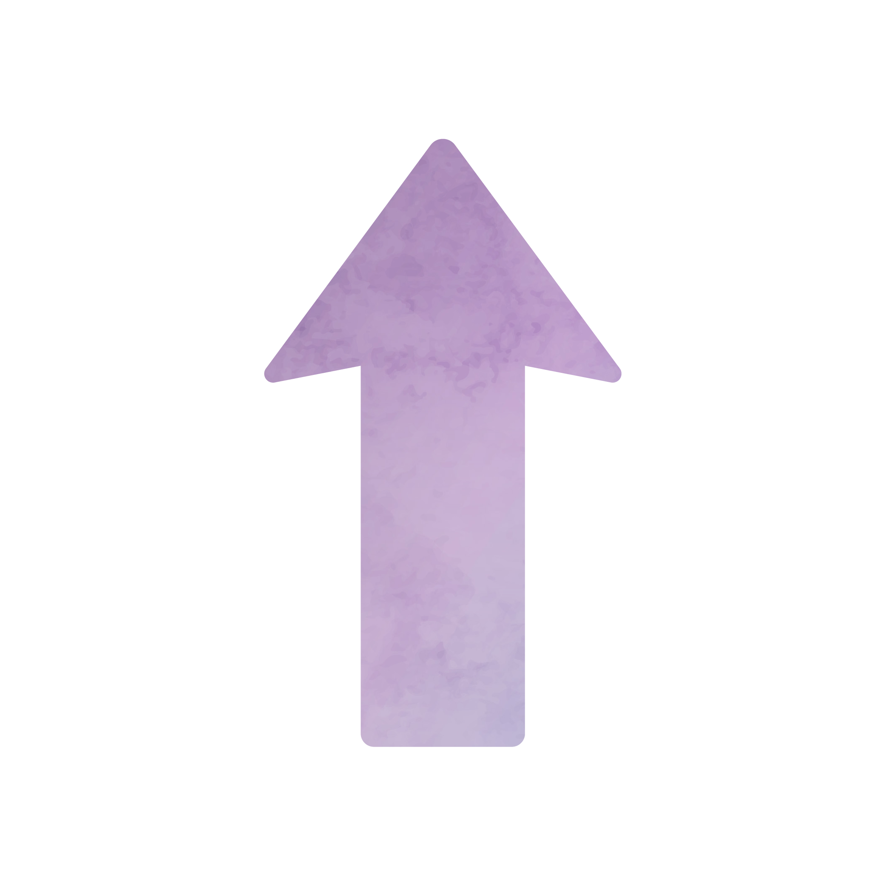
矢印上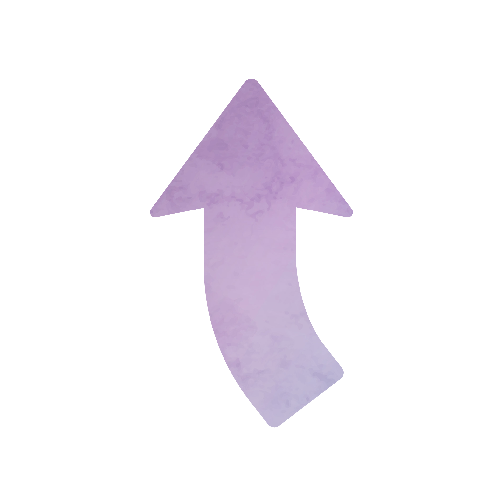
矢印上曲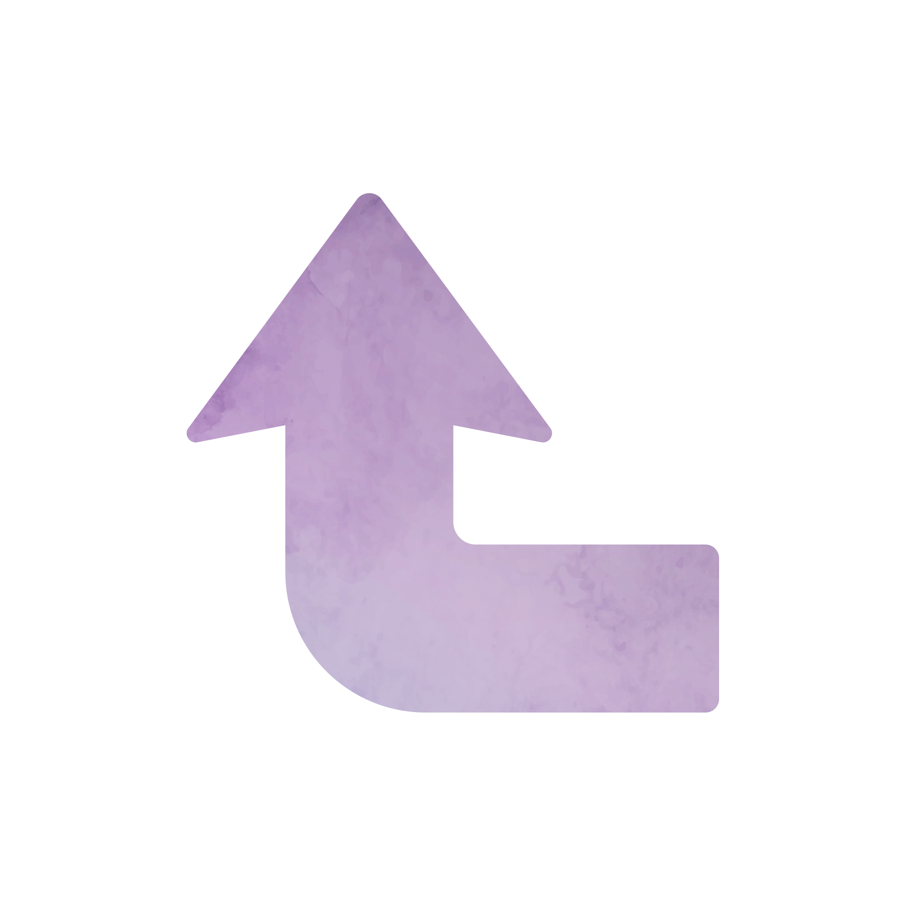
矢印上極曲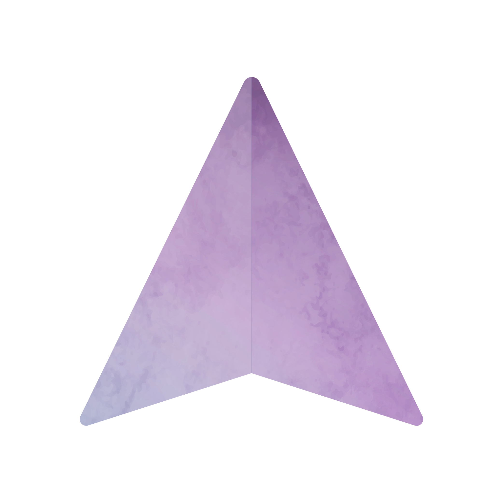
頭矢印Objects — オブジェクト
 ラップトップ
ラップトップ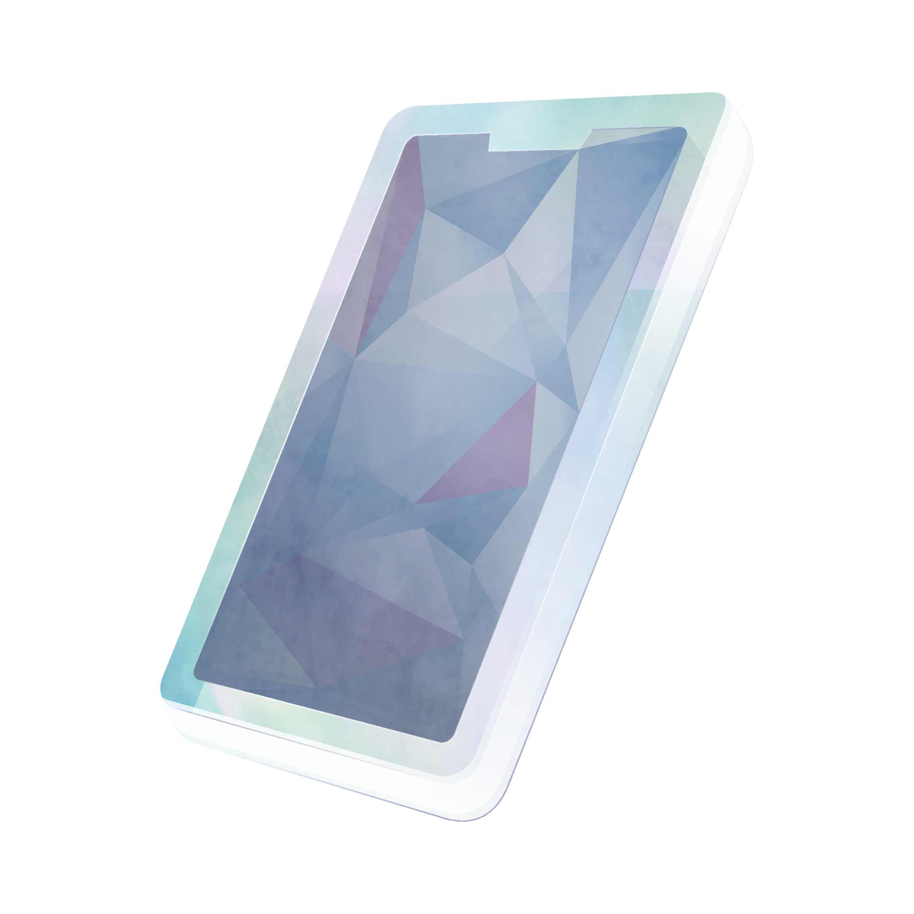
スマートフォン 手紙（閉）
手紙（閉） 的
的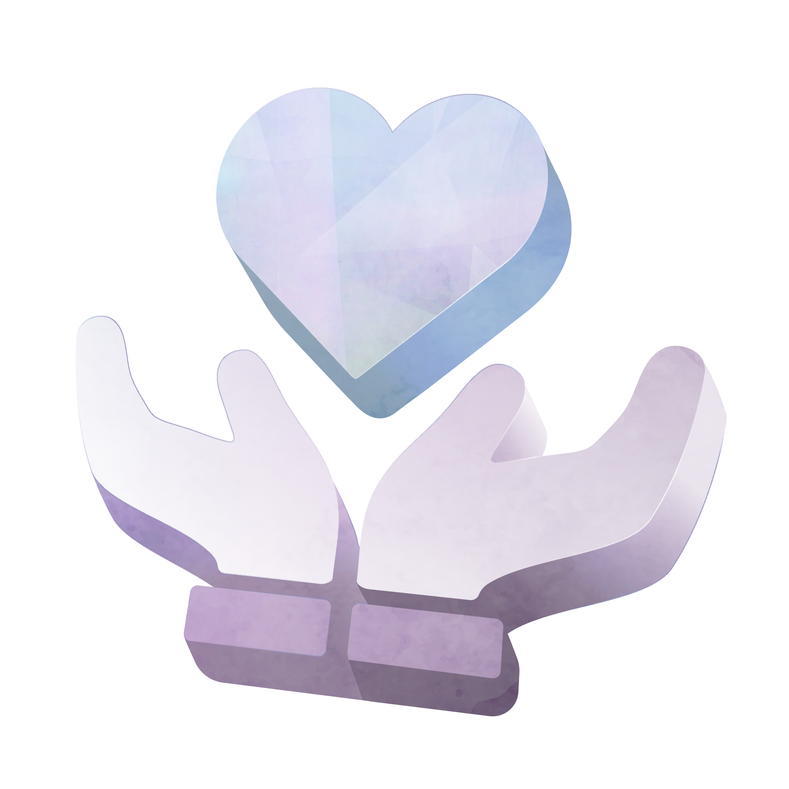
ハート グッド
グッド マップピン
マップピン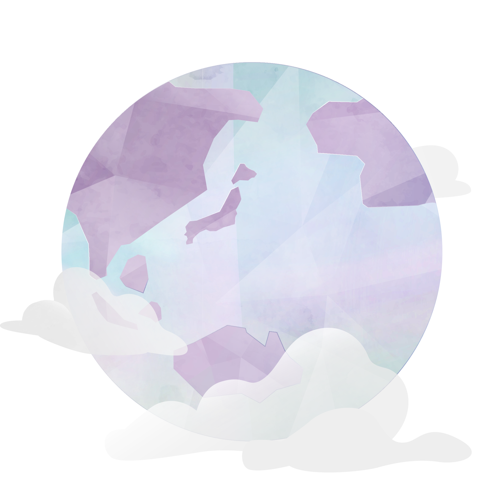
アースBrand & Scenes — ブランド・シーン
 ブランドマーク
ブランドマーク ロゴベクター
ロゴベクター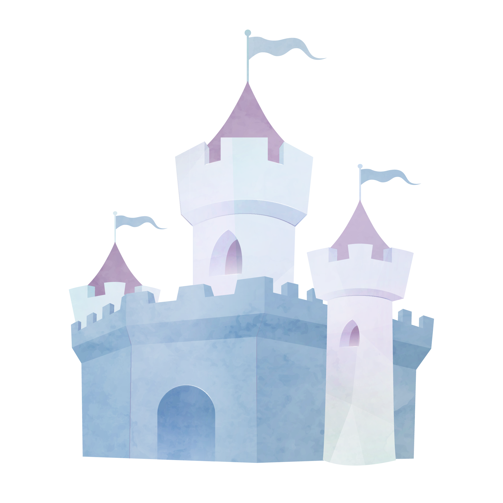
キャッスル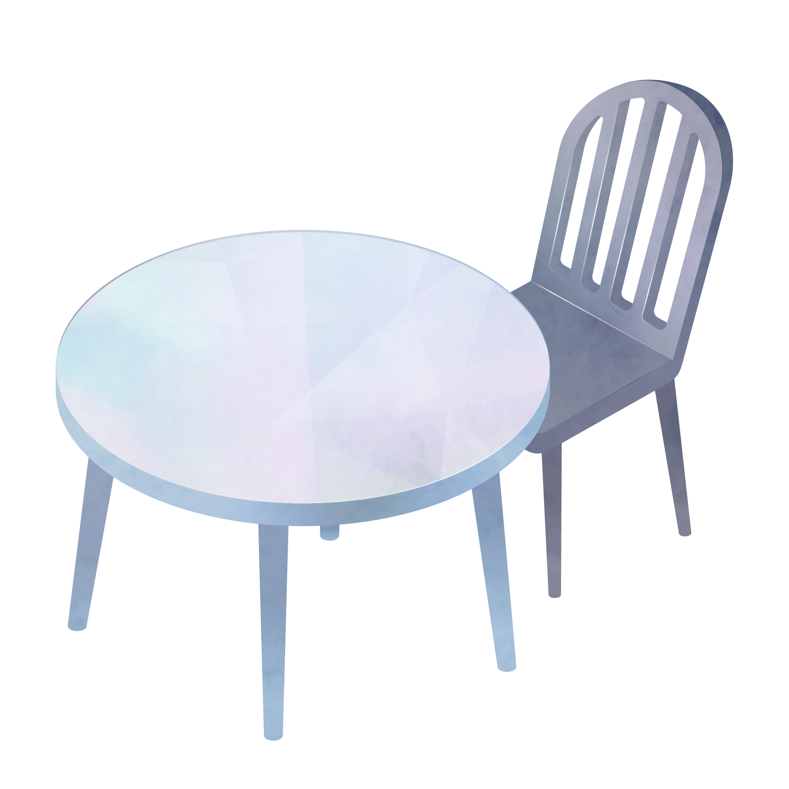
インテリア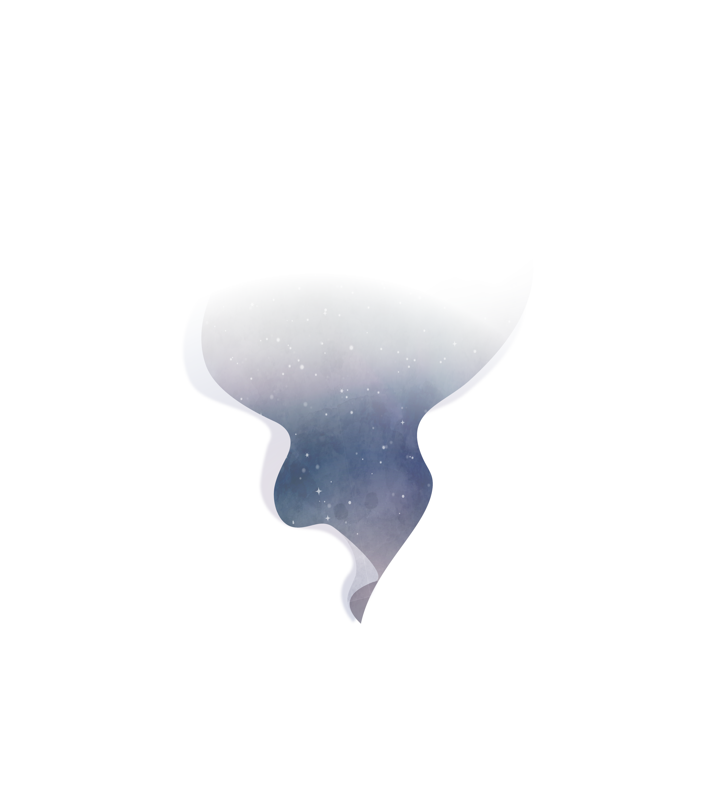
NightContact
お問い合わせページのメインビジュアル。暗背景に白抜きのテキスト・ロゴを重ねて使用します。
Contact Visual — コンタクトビジュアル
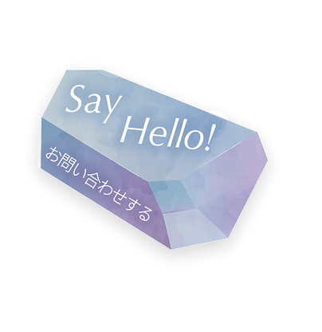
| Property | Value |
|---|---|
| ファイル | illust-brand/contact.png |
| 使用場面 | Contactページ背景・メインビジュアル |
| テキスト色 | #FFFFFF — 白抜き |
| ロゴ | 白抜き版（logo/logo-white.svg）を使用 |
Design Principles
Highliteのビジュアル言語を支える5つの設計原則です。